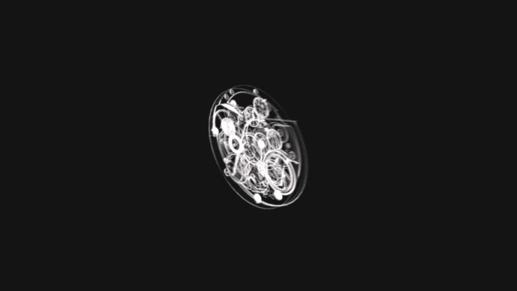

Hublot
Breakdown
이 작품을 만드느라 시계 만들어지는 과정, 재료들을 공부해봤습니다.
처음에 시계 하우징이 재료사이에 껴져있는걸 연출하고 싶었습니다.
 라이트를 기깔나게 나눠서 했습니다. 메탈에 라이트 주는 방법을 확실히 알았습니다.
라이트를 기깔나게 나눠서 했습니다. 메탈에 라이트 주는 방법을 확실히 알았습니다.
 이 분위기를 너무 표현해보고 싶었습니다. mri? xray? 하여튼 시계 내부를 저렇게 표현해보고 싶었어요..
이 분위기를 너무 표현해보고 싶었습니다. mri? xray? 하여튼 시계 내부를 저렇게 표현해보고 싶었어요..
근데 예쁘게 된거같지않나요..? 실험실 느낌도 나구..ㅎㅎ

사실 xray와 mri의 정확한 차이를 몰라 그냥 둘다 넣었습니다.
레드쉬프트의 커버쳐를 이미션에 꽃아서 만들었던걸로 기억합니다. 만들기 엄청 쉬워요!